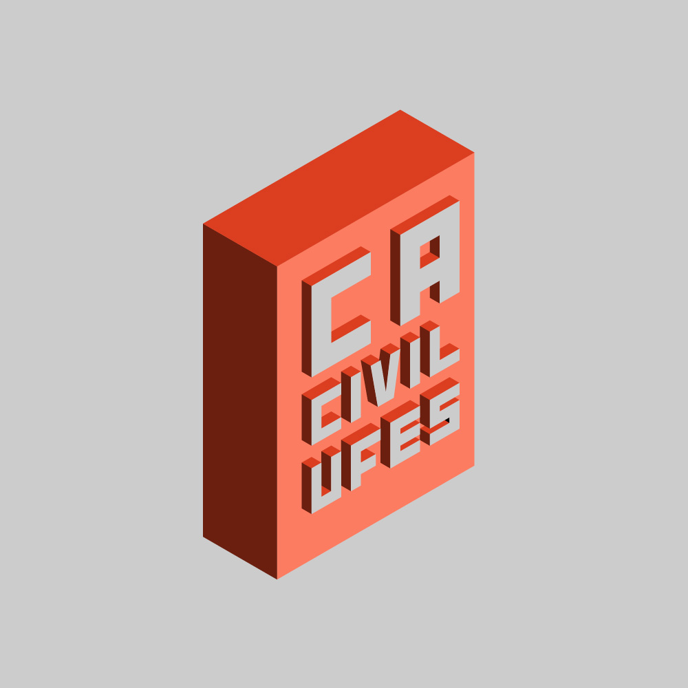

Quantidade de arquivos postados nessa semana: . Meta -> 100. Ajude-nos a chegar lá, e complete a barrinha acima! Total de arquivos

üî• OverDrive üî•
Como funciona?
Você pode enviar arquivos por este formulário:
Seu envio aparecerá automaticamente na "Grande Planilha", por meio do salvamento da URL do arquivo e categorização dele, permitindo que seja encontrado facilmente por meio dos filtros, perpetuando seu material.
Para acesso aos materiais do Drive Antigo, clique no link abaixo.
Realizar Busca
*Selecione os filtros que desejar:
Não achou o que estava procurando aqui? Considere pesquisar no drive antigo (link abaixo)
Aqui está a planilha completa
Não achou o que estava procurando aqui? Considere pesquisar no drive antigo (link abaixo)